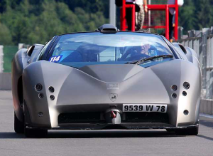

|  |
Lamborghini Pregunta
|
"Pregunta" is actually not a Lamborghini model. However, Lamborghini did create a concept car in 1998 called the Lamborghini Pregunta. It was a one-off prototype designed as a technology demonstrator, showcasing Lamborghini's latest advancements in materials, technology, and engineering.
The Lamborghini Pregunta was based on the Lamborghini Diablo and featured a carbon fiber body and Kevlar panels. It was powered by a 530 horsepower V12 engine, capable of reaching a top speed of 207 mph.
The exterior design of the Pregunta was characterized by its angular, aggressive lines and aerodynamic features, such as the rear spoiler and front splitter. The interior was designed to be lightweight and minimalist, with carbon fiber seats and dashboard, and an advanced digital instrument cluster.
While the Lamborghini Pregunta was never intended for production, it represented Lamborghini's commitment to innovation and cutting-edge technology. It also set the stage for some of the brand's later models, which incorporated many of the same design and engineering features showcased in the Pregunta.